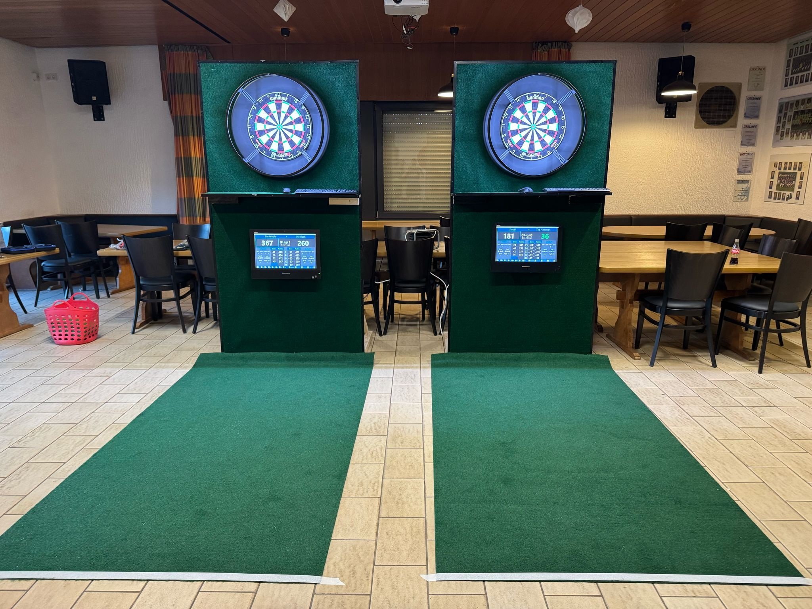
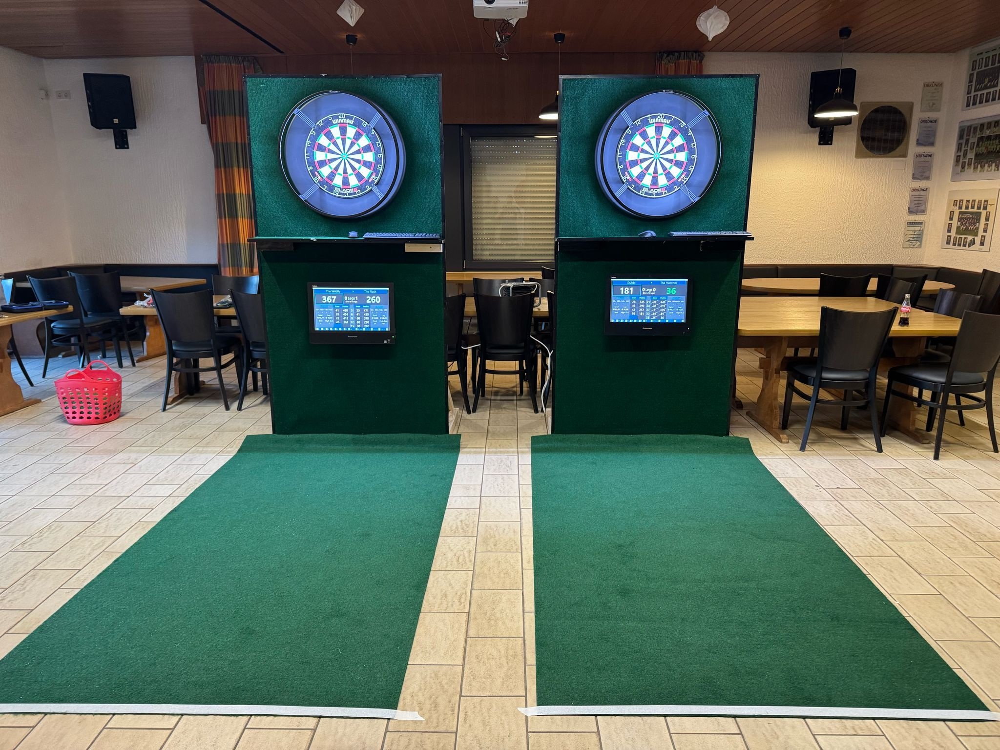

Willkommen bei der Dart-Abteilung des VfL Weierbach
Hier erfährst du alles über unser Team, unser Training und die Veranstaltungen!
Trainingstag
Jeden Donnerstag ab 18 Uhr im Vereinsheim.
Vereinsspieler
- Matthias "The Underdog" Müller
- Marvin "The Wildfly" Wild
- Julian "Madhouse" Müller
- Georg "The Hammer" Hamelmann
- Sven "The Red Baron" Lempke
- Stefan "The Flash" Schlosser
- Björn Rupprich
- Niko "The Frozen Sniper" Müller
- Thomas "TK Finish" Keibel
- Tobias
- Christian "Dart Vader" Wagner
Bildergalerie
 

Unsere Sponsoren
Dank der großzügigen Unterstützung unserer Sponsoren konnten wir unsere Dart-Anlagen modernisieren!
Glasfinish
Medimobil
EMS Elektro Mix Shop
Über uns
Wir sind die Dart-Abteilung des VfL Weierbach, gegründet am 01. März 2025. Unser Training findet jeden Donnerstag ab 18 Uhr im Vereinsheim statt. Ab September nehmen wir an der EHM-Liga teil. Derzeit besteht unser Team aus 11 aktiven Spielern.